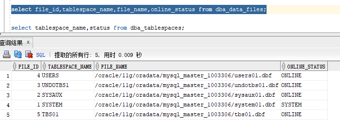

RMAN恢复数据文件和表空间
当数据文件由于操作失误或者介质损坏而丢失或损坏的时候可以进行恢复
如果是介质损坏则需要先修复介质
system、undo表空间的数据文件损坏需要关闭数据库进行恢复
恢复数据文件
run {
sql 'alter database datafile 5 offline';
restore datafile 5;
recover datafile 5;
sql 'alter database datafile 5 online';
}
实验：
sys@MYSQL_MA> select file_id,tablespace_name,file_name,online_status from dba_data_files;

删除tbs01.dbf
[oracle@mysql-master-1003306 ~]$ rm -rf /oracle/11g/oradata/mysql_master_1003306/tbs01.dbf
使用rman恢复，前提是要先有备份
RMAN> run {
sql 'alter database datafile 5 offline';
restore datafile 5;
recover datafile 5;
sql 'alter database datafile 5 online';
}
sql statement: alter database datafile 5 offline
Starting restore at 21-MAY-18
allocated channel: ORA_DISK_1
channel ORA_DISK_1: SID=41 device type=DISK
channel ORA_DISK_1: starting datafile backup set restore
channel ORA_DISK_1: specifying datafile(s) to restore from backup set
channel ORA_DISK_1: restoring datafile 00005 to /oracle/11g/oradata/mysql_master_1003306/tbs01.dbf
channel ORA_DISK_1: reading from backup piece /oracle/11g/flash_recovery_area/MYSQL_MA/backupset/2018_05_21/o1_mf_nnndf_TAG20180521T113848_fj5t08z3_.bkp
channel ORA_DISK_1: piece handle=/oracle/11g/flash_recovery_area/MYSQL_MA/backupset/2018_05_21/o1_mf_nnndf_TAG20180521T113848_fj5t08z3_.bkp tag=TAG20180521T113848
channel ORA_DISK_1: restored backup piece 1
channel ORA_DISK_1: restore complete, elapsed time: 00:00:03
Finished restore at 21-MAY-18
Starting recover at 21-MAY-18
using channel ORA_DISK_1
starting media recovery
media recovery complete, elapsed time: 00:00:01
Finished recover at 21-MAY-18
sql statement: alter database datafile 5 online
恢复表空间
恢复表空间包括对该表空间所有数据文件的恢复
需要注意离线的数据文件，离线的数据文件在恢复表空间的时候是不会被恢复的，需要单独进行恢复
system或undo表空间丢失则数据库要关闭才能进行恢复
run {
sql 'alter tablespace tablespace_name offline immediate';
restore tablespace tablespace_name;
recover tablespace tablespace_name;
sql 'alter tablespace tablespace_name online';
}
实验：
RMAN> run {
sql 'alter tablespace tbs01 offline immediate';
restore tablespace tbs01;
recover tablespace tbs01;
sql 'alter tablespace tbs01 online';
}
starting full resync of recovery catalog
full resync complete
sql statement: alter tablespace tbs01 offline immediate
Starting restore at 21-MAY-18
using channel ORA_DISK_1
channel ORA_DISK_1: starting datafile backup set restore
channel ORA_DISK_1: specifying datafile(s) to restore from backup set
channel ORA_DISK_1: restoring datafile 00005 to /oracle/11g/oradata/mysql_master_1003306/tbs01.dbf
channel ORA_DISK_1: reading from backup piece /oracle/11g/flash_recovery_area/MYSQL_MA/backupset/2018_05_21/o1_mf_nnndf_TAG20180521T125815_fj5yo89p_.bkp
channel ORA_DISK_1: piece handle=/oracle/11g/flash_recovery_area/MYSQL_MA/backupset/2018_05_21/o1_mf_nnndf_TAG20180521T125815_fj5yo89p_.bkp tag=TAG20180521T125815
channel ORA_DISK_1: restored backup piece 1
channel ORA_DISK_1: restore complete, elapsed time: 00:00:03
Finished restore at 21-MAY-18
Starting recover at 21-MAY-18
using channel ORA_DISK_1
starting media recovery
media recovery complete, elapsed time: 00:00:01
Finished recover at 21-MAY-18
sql statement: alter tablespace tbs01 online
starting full resync of recovery catalog
full resync complete
如果原介质不可用了，需要把数据文件恢复到不同的位置，可以使用set newname命令来指定新的目录
针对数据文件使用
set newname for datafile 3 to 'PATH'
针对表空间使用
set newname for tablespace tablespace_name to 'PATH'
目标文件名可使用变量
%b：不含目录的文件名
%f：文件编号
%I：DBID
%N：表空间名称
%U：系统自动生成文件名，data-%I_TS-%N_FNO-%f
针对数据文件例如：
run {
sql 'alter database datafile 5 offline';
set newname for datafile 5 to '/oracle/11g/oradata/orcl/%U';
restore datafile 5;
switch datafile all;
recover datafile 5;
sql 'alter database datafile 5 online';
}
针对表空间例如：
run {
sql 'alter tablespace tablespace_name offline immediate';
set newname for tablespace tablespace_name to '/oracle/11g/oradata/orcl/%U';
restore tablespace tablespace_name;
switch datafile all;
recover tablespace tablespace_name;
sql 'alter tablespace tablespace_name online';
}
————————————————————————————————————————
如果认为误操作导致删除了数据文件，又没有备份，短期可以进行恢复，因为删除只是删除了元数据，实际的数据短时间没有被覆盖，且oracle还持有文件句柄，就可以恢复
例如：
删除数据文件TBS01
[oracle@mysql-master-1003306 mysql_master_1003306]$ ls
control01.ctl redo01.log redo02.log redo03.log sysaux01.dbf system01.dbf TBS01 temp01.dbf undotbs01.dbf users01.dbf
[oracle@mysql-master-1003306 mysql_master_1003306]$ rm -rf TBS01
恢复步骤
1）查看ora_dbw进程
[oracle@mysql-master-1003306 mysql_master_1003306]$ ps -ef |grep ora_dbw
oracle 4388 1 0 13:30 ? 00:00:00 ora_dbw0_orcl
oracle 4604 3782 0 13:47 pts/2 00:00:00 grep --color=auto ora_dbw
进到fd里面，被删除的文件会被标记为delete，如下所示
[oracle@mysql-master-1003306 fd]$ cd
[oracle@mysql-master-1003306 ~]$ cd /proc/4388/fd
[oracle@mysql-master-1003306 fd]$ ll
total 0
lr-x------. 1 oracle oinstall 64 May 21 13:41 0 -> /dev/null
l-wx------. 1 oracle oinstall 64 May 21 13:41 1 -> /dev/null
l-wx------. 1 oracle oinstall 64 May 21 13:41 10 -> /oracle/11g/diag/rdbms/mysql_ma/orcl/trace/orcl_ora_4323.trc
l-wx------. 1 oracle oinstall 64 May 21 13:41 11 -> /oracle/11g/diag/rdbms/mysql_ma/orcl/trace/orcl_ora_4323.trm
lr-x------. 1 oracle oinstall 64 May 21 13:41 12 -> /oracle/11g/product/11.2.0/dbhome_1/rdbms/mesg/oraus.msb
lr-x------. 1 oracle oinstall 64 May 21 13:41 13 -> /dev/zero
lr-x------. 1 oracle oinstall 64 May 21 13:41 14 -> /proc/4388/fd
lr-x------. 1 oracle oinstall 64 May 21 13:41 15 -> /dev/zero
lrwx------. 1 oracle oinstall 64 May 21 13:41 16 -> /oracle/11g/product/11.2.0/dbhome_1/dbs/hc_orcl.dat
lrwx------. 1 oracle oinstall 64 May 21 13:41 17 -> /oracle/11g/product/11.2.0/dbhome_1/dbs/lkMYSQL_MA
lrwx------. 1 oracle oinstall 64 May 21 13:41 18 -> /oracle/11g/oradata/mysql_master_1003306/control01.ctl
lrwx------. 1 oracle oinstall 64 May 21 13:41 19 -> /oracle/11g/flash_recovery_area/mysql_master_1003306/control02.ctl
l-wx------. 1 oracle oinstall 64 May 21 13:41 2 -> /dev/null
lrwx------. 1 oracle oinstall 64 May 21 13:41 20 -> /oracle/11g/oradata/mysql_master_1003306/system01.dbf
lrwx------. 1 oracle oinstall 64 May 21 13:41 21 -> /oracle/11g/oradata/mysql_master_1003306/sysaux01.dbf
lrwx------. 1 oracle oinstall 64 May 21 13:41 22 -> /oracle/11g/oradata/mysql_master_1003306/undotbs01.dbf
lrwx------. 1 oracle oinstall 64 May 21 13:41 23 -> /oracle/11g/oradata/mysql_master_1003306/users01.dbf
lrwx------. 1 oracle oinstall 64 May 21 13:41 26 -> socket:[42915]
lrwx------. 1 oracle oinstall 64 May 21 13:41 27 -> /oracle/11g/oradata/mysql_master_1003306/temp01.dbf
lr-x------. 1 oracle oinstall 64 May 21 13:41 28 -> /oracle/11g/product/11.2.0/dbhome_1/rdbms/mesg/oraus.msb
lrwx------. 1 oracle oinstall 64 May 21 13:41 29 -> /oracle/11g/oradata/mysql_master_1003306/TBS01 (deleted)
l-wx------. 1 oracle oinstall 64 May 21 13:41 3 -> /oracle/11g/product/11.2.0/dbhome_1/rdbms/log/orcl_ora_4323.trc
lr-x------. 1 oracle oinstall 64 May 21 13:41 4 -> /dev/null
lr-x------. 1 oracle oinstall 64 May 21 13:41 5 -> /dev/null
lr-x------. 1 oracle oinstall 64 May 21 13:41 6 -> /dev/null
lrwx------. 1 oracle oinstall 64 May 21 13:41 7 -> /oracle/11g/product/11.2.0/dbhome_1/dbs/hc_orcl.dat
lrwx------. 1 oracle oinstall 64 May 21 13:41 8 -> /oracle/11g/product/11.2.0/dbhome_1/dbs/lkinstorcl (deleted)
lr-x------. 1 oracle oinstall 64 May 21 13:41 9 -> /proc/4388/fd
将其拷贝到原有位置，就恢复了
[oracle@mysql-master-1003306 fd]$ cp 29 /oracle/11g/oradata/mysql_master_1003306/TBS01
[oracle@mysql-master-1003306 fd]$ ls -l /oracle/11g/oradata/mysql_master_1003306/TBS01
-rw-r-----. 1 oracle oinstall 209723392 May 21 13:50 /oracle/11g/oradata/mysql_master_1003306/TBS01